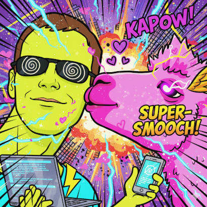

You can reach me at ping2A (at) 42 (dot) bzh
I spent my last decade at Google in the Android Security Team, to fight against Android malware !
I'm now working at CERT-EDF, to keep the light on ;)
Public projects
Open source work across Androguard, IsMyPhonePwned, and personal repos.
Androguard
- androguard — Python toolkit for reverse engineering, static analysis and pentesting of Android apps (APK, DEX, resources).
- goauld — Dynamic code injection into Linux/Android processes via
/proc/pid/mem; no ptrace, Rust.
- dex-parser — Low-level DEX parser in Rust; the scalpel for Dalvik executables.
- dex-bytecode — DEX bytecode disassembler and assembler in Rust; works with dex-parser.
- dex-decompiler — DEX to high-level code decompiler in Rust; builds on dex-parser and dex-bytecode.
- axml-parser / axml — Parse Android binary XML (manifest, resources); Rust parser and Python bindings.
- apk-parser — Parse APK metadata and contents in Python without full unpacking.
- yara-droid — Small, fast Yara-X-style rule matching for Android/DEX artifacts (Rust, GPL-3).
- freedump — Dump process memory on Android/Linux using Frida; useful for forensics and analysis.
IsMyPhonePwned
- mimic — Rust library to detect files crafted to exploit parsing CVEs (DNG/RTF/TTF/RAR/PDF). Analysis runs in-browser; nothing uploaded.
- bugreport-extractor-library — Rust library to read and extract structured data from Android bug reports for pwned-check and analysis.
- webadb-rs — Run ADB commands from the browser via WebUSB; powers the IsMyPhonePwned bugreport flow.
ping2A (personal)
- CanIGoIn — Security Chrome extension for clickfix and safe-browsing fun.
- ShellWeDance — PowerShell command-line analysis (psexposed-style indicators) and Sigma rule evaluation in Rust; decodes
-EncodedCommand, WASM UI.
- sigmazero — Evaluate Sigma detection rules in pure Rust; no Python runtime.
- IronSift — “Where’s Waldo?” style security and analysis tool (Rust).
- BadUSBPy — BadUSB-style device emulation and scripting in Python.
- anomark-rs — Anomark (Android app signing / anomaly detection) reimplemented in Rust with a bit of AI.
EDF
- dumpstate-py — Pure Python package to extract useful structures from Android Bug Reports for forensics (battery, packages, processes, power, sockets, etc.).
- rusty-magpie — Android artifacts collector and Yara-X scanner in Rust; collects processes and file lists on-device and runs Yara rules directly on the phone.
Papers & talks
- DroidKaigi Tokyo 2023 — Securing Android Applications: The not so secret guide explained
- DroidCon San Francisco 2023 — Securing Android Applications: The not so secret guide explained
- Google Security Blog 2017 — Tizi: Detecting and blocking socially engineered spyware on Android
- Pacsec Japan 2012 — New "open source" step in Android Application Analysis
- Phrack 68 2012 — Similarities for Fun and Profit
- HICSS 2012 — Android: Static Analysis Using Similarity Distance
- Blackhat Abu Dhabi 2011 — Android: from reversing to decompilation
- Computer Security Congress 2011 — Analyzing Android Applications
- EICAR 2011 — Android Malwares: is it a dream?
- Hack.lu 2010 — Dynamic, Metamorphic (and open source) Virtual Machines
- RSSIL 2010 — Questions autour des antivirus
- ECIW 2010 — Forensic and Software (un)Obfuscation
- ECIW 2010 — BinThavro: towards a useful and fast tool for Goodware and Malware Analysis
- iAWACS 2010 — Processor-Dependant Malware ... and codes
- Hack.lu 2009 — Implementation of K-ary Viruses in python
- Hack.lu 2009 — iAWACS 2009 Debrief
- EICAR 2009 — Detecting (and creating!) of an HVM rootkit (aka Bluepill-like)
- EICAR 2009 — Memory Live Forensics
- SSTIC 2008 — ERESI: Une plate-forme d'analyse binaire au niveau noyau
Tools & older projects
- PX8 / Unicorn console — Open source fantasy console — github.com/PikuseruConsole/pikuseru
- Elsim — Elements Similarities — code.google.com/archive/p/elsim/
- Draugr — Live memory forensics on Linux (/dev/(k)mem, memory dump) — code.google.com/archive/p/draugr/
- Kernsh (ERESI Project) — Interactive, modular, and scriptable interpreter of the ERESI language dedicated to static and runtime accessibility of the kernel ondisk image and the kernel memory
- Sanson The Headman — A dive in the wonderful world of memory (Remote Userland Execve ...)